User Experience Guidelines¶
The purpose of the Mattermost User Experience Guidelines (“UX Guidelines”) is to deliver a level of usability and consistency that turns users of Mattermost software into fans of the Mattermost experience.
Design Principles¶
“Fast, Obvious, and Forgiving” – These principles define the standard we’re setting for the Mattermost experience:
Fast¶
Fast has two parts: being responsive and being quick.
Responsive means when a user clicks, taps, types or otherwise enters input we give immediate feedback that the input is received and something is happening. It could be a spinner animation, or just some text saying “Loading”, but something always responds to the user.
Quick means things happen as soon as they can. Loading pages, sending messages, receiving notifications and other vital actions should be automatically benchmarked for performance. Bugs should be opened on performance regressions.
Obvious¶
Obvious means users are never confused. Across product features, interface layout, labeling, help text, and documentation, it is critical that everything we offer makes sense in the mind of the user, even if it means oversimplifying how things technically work.
If a user doesn’t understand how to use a feature, all the underlying effort and code is wasted. The “Obvious” design principle also flows through to our Documentation Guidelines.
Given Hick’s Law, core functionality should be apparent, and advanced functionality should be possible via sub-menus and well documented and tested.
Functionality that is not fundamental to the product purpose should be ruthlessly omitted.
Forgiving¶
Forgiving means there’s no such thing as user error–-it’s always the fault of the product. This mindset means we can fix problems coming from users making unexpected decisions. Fixes could be through user interface improvements, adjustments to help text, or helping users recover when things go wrong–adding undelete, undo and rolling back for example.
Forgiving extends to compatibility as well, and whether you’re working from a PC, phone or tablet, Mattermost should adjust to reasonably serve your device, screen size, and major browser type.
Technical Guidelines¶
Bootstrap Classes¶
Since we’re using bootstrap, try to utilize bootstrap classes as much as possible rather than creating new styles or using inline styles.
Custom Styles¶
We’re using BEM methodology and would advise everyone to do so when creating new classes or ids. There’s a lot of places in our app that currently don’t follow BEM but we’re trying to improve the codebase. Here is a brief overview of the BEM syntax.
Design Guidelines¶
Button States¶
All buttons should have a visually distinct appearence for the following states (if applicable):
- default
- on_hover / on_hover (w tooltip)
- active
- disabled (greyed out or hidden)
Example:
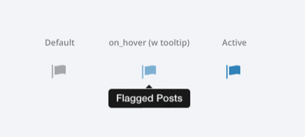
Notifications: Header¶
Appears as an additional header at the top of the UI. May include an “x” button to dismiss. Limited to 60 characters. May include a time-out. Header notification should appear over the rest of the UI instead of pushing the UI down. Multiple headers can appear, with the earliest notification at the top and more recent notifications appearing underneath.
Desktop
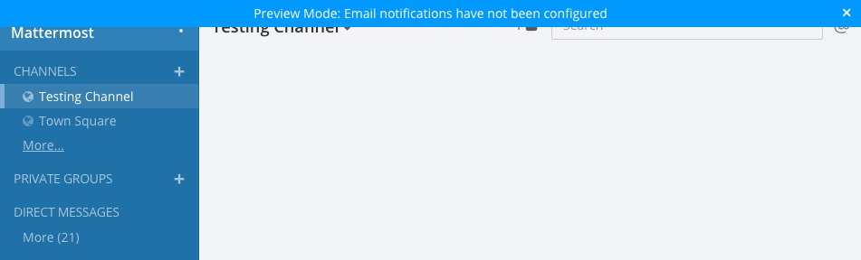
Mobile
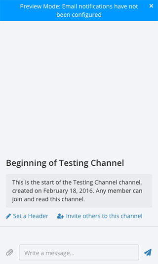
There are several modes for this element:
System-wide header notification:
Triggered on login. Includes “x” button to dismiss. No timeout. Removed when system admin cancels.Examples:“Try our new Windows App. Click here to download.”,“Scheduled maintenance 2:00am to 2:30am starts in 20 minutes, 3 seconds.”Action required header notification:
Triggered on login. No “x” button to dismiss. No timeout. Dismissed when action completed.Examples:“We’re evolving. Please review and accept our new terms of service.”Persistent issue header notification:
Triggered on issue. No “x” button to dismiss. Dismissed when issue no longer persists.Examples:“You are not connected to the internet.”
Input: Validation¶
Feedback on action:
The user should be notified about the action he performed along with any implications associated with it.
- Example 1:
“Settings are saved but will be applied after a server restart”
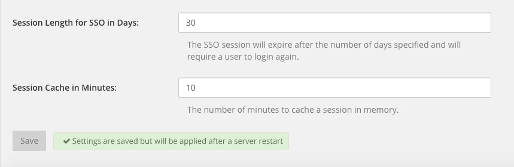- Example 2:
“Link copied to clipboard”
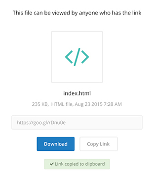
Save prompt:
A prompt should appears if a user makes changes to a setting and attempts to navigate away without saving them.
- Example:
“You have unsaved changes, are you sure you want to discard them?”
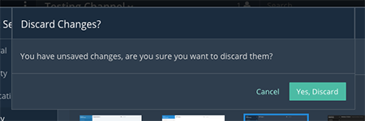
Display: Icons¶
- When to use icons
- When there’s not enough space for the label and an icon can easily represent the label.
- When an icon can help the user more quickly understand a feature.
- When not to use icons
- When the term/phrase is too specific or complicated.
- Icons should vary across different options
- When using icons, different options in the same section should have different icons.
- Testing
- File a bug if the icon is difficult to understand or has cosmetic defects (size, blur, etc.)
- File a bug when an icon doesn’t obviously indicate the underlying feature
Input: Hints¶
Fieldname:
The labels on input fields should be as obvious as possible for the intended user.
- Incorrect:
- Handle: The name of the subdirectory used to navigate to a channel using the site URL appended with the handle name. Must use only valid URL inputs
- Correct:
- Channel URL: The web address used to reach your channel.
Help text:
Text below an input field should clearly and concisely describe the PURPOSE of the input.
In general, avoid describing the technical requirements of the field in Help Text, and use Placeholder input text, field validation and error messages to convey requirements. The exception to this guideline is if requirements are non-obvious, such as passwords needing different numbers of characters, symbols, etc.
For a setting involving a CONDITION and an ACTION, the help text should be written as “ACTION when/for CONDITION”
- Incorrect:
- When a new message is received, flash the taskbar icon.
- Correct:
- Flash the taskbar icon when a new message is received.
Placeholder input text:
Show examples of valid input, such asname@example.comfor email addresses, as well as examples of functionality that is not obviously supported. For example, for a channel name field the placeholder input text could be “Example: Marketing, John’s Room, 中国业务”.
Field validation:
Use field validation to help “prevent or correct” any mistakes a user might make.
For textfields, restrict users from making entries that are too long by limiting characters via the maxlength attribute.
For textareas, show a character counter and then a helpful message if the user exceeds the maximum number of characters.
Example 1:
Example 2:
If a user enters invalid uppercase letters and spaces for a URL, show an error message and also offer a correction, substituting dashes for spaces and lower case letters for uppercase letters, so the user can resubmit immediately with valid input.
{kind=link}
{kind=link}
Input: Fields¶
Users should enter information into fields without much thinking. ENTER button on last input field should trigger default dialog button. When last input field in a series has focus and user hits ENTER it should trigger the default button in the dialog.
Example 1:
If focus is on the last input field in dialog (“Miller”), hitting ENTER triggers the default dialog button (“Send Invitations”)
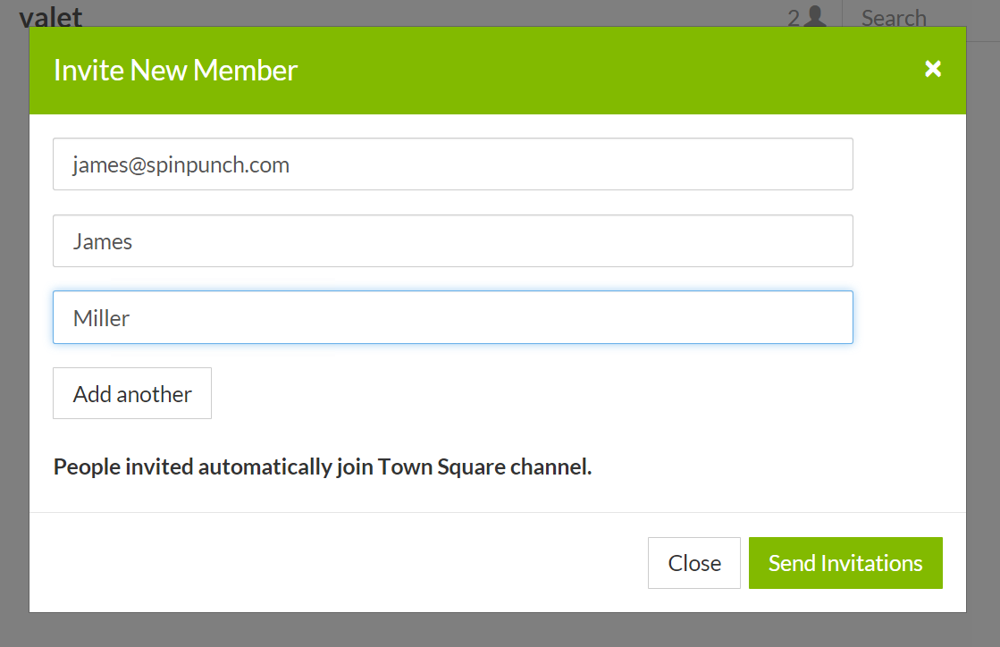
{kind=link}
Example 2:
Having radio buttons for input options. NOTE: We should use radio buttons/checkboxes for input options rather than custom bootstrap on/off switches.
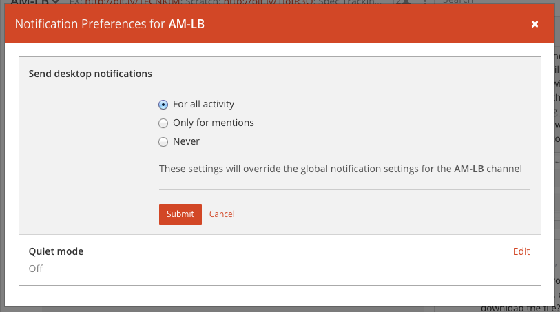
{kind=link}
Display: Button Placement¶
Dialog BOTTOM RIGHT BUTTONS should be either “Close”, or “Cancel” and [ACTION_BUTTON].
If there’s one button on the bottom right, it should be “Close”, if there are two, the one on the left should be “Cancel” and the one on the right should be an [ACTION_BUTTON], like “Save” or “Send Invitations”.
Example:
- Correct:
Single button at the bottom right should be “Close”.
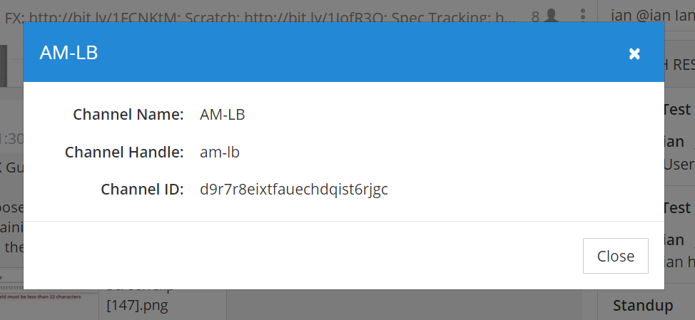- Correct:
When there are two buttons on bottom right, left button should be “Cancel” and the button on the right should be the [ACTION_BUTTON], in this case “Send Invitations”.
- Incorrect:
When there are two buttons at the bottom right, left button should not be “Close”, as it’s not clear if closing will or won’t execute the [ACTION_BUTTON].
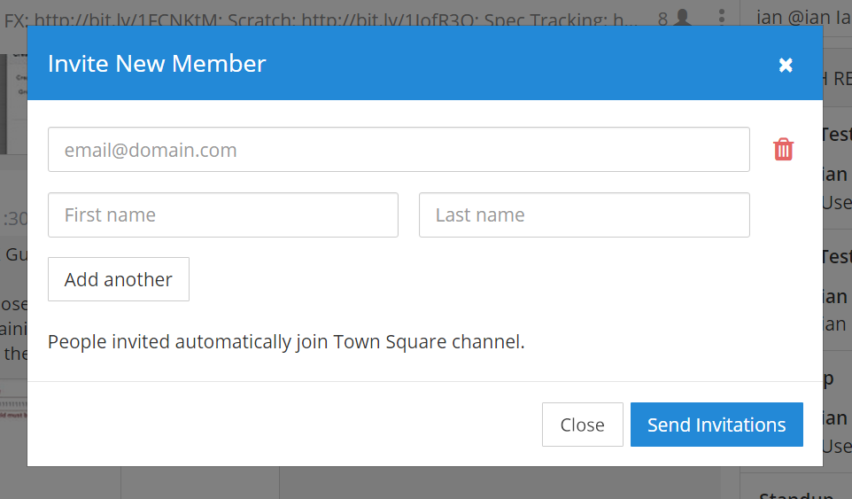
{kind=link}
{kind=link}
{kind=link}
Display: Number of Choices¶
To simplify decisions, when practical, limit the number of choices to 3 or 4, and add separators or headings between logical groups. See Hick’s Law for background on why this helps.
Example:
{kind=link}
{kind=link}
Display: Alignment¶
Elements should feature margins horizontally and vertically, evenly spaced.
Create space between elements, such as buttons, text, line separators, headers and backgrounds, by leaving even space around them (either equal space or at most 1 pixel difference).
{kind=link}
{kind=link}
Horizontally align multi-line elements along a vertical line.
Example:
- Roles right justified with respect to the text and irrespective of the icon.
- 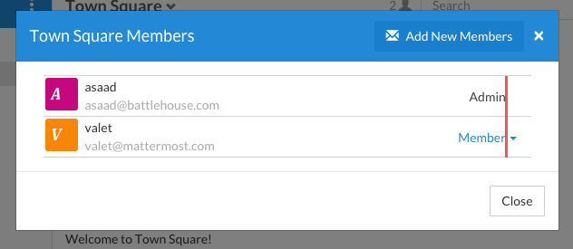
{kind=link}
Instructions should be sentences, one-line links should be fragments.
Instructions, such as “A password reset link has been sent to you@email.com for your account. Please check your inbox.”, should be displayed as sentences ending in periods. One-line links, such as “Find it here”, should not end in periods or commas, but question marks are okay.
Example:
- Incorrect:
Instruction “Please check your inbox”, didn’t end with a period.
- Correct:
Instruction “Please check your inbox”, ended with a period.
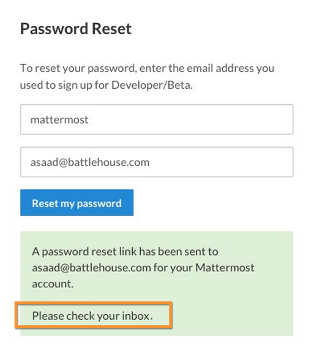
{kind=link}
{kind=link}
Organization: Reduce Obvious Steps¶
If the action users need to perform is obvious, we should make concious decisions to reduce some of the steps involved in that process.
- Example 1:
Clicking on the search icon on mobile should focus the search bar when it slides in.
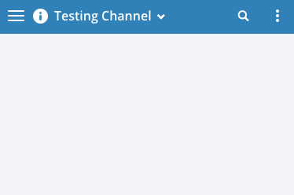- Example 2:
Clicking on the reply icon should move the focus to the comment box in the right-hand sidebar.
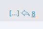- Example 3:
Switching channels should move the focus to the post box in the center channel.
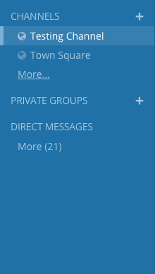
Feedback: Error Messages¶
On occasion, Mattermost users may encounter a problem that prevents them or the Mattermost system from successfully completing a task. The unexpected user behaviour or system response should be communicated to the user through an error message, and should follow the design principles of forgiving and obvious.
Error messages should:
- State the encountered problem with the component in the title (e.g. Team URL Not Found).
- Describe very briefly why the error happened under the title.
- When possible, have a link to direct users to help complete their original task or return to the previous state.
- Give recommendations/solution(s) for the next course of action.
- Be consistent with the Mattermost voice and look professional.
- Be avoided when possible (by avoiding the error condition).
Error message should not:
- Be in red or in capital letters.
- Say or have the term “Error”.
- Be lengthy.
- Be generic.
Examples:
This is an example of a good error message:
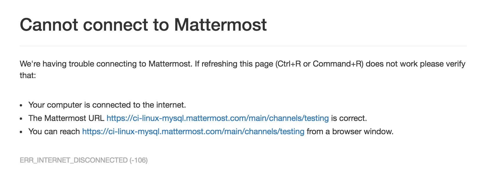This is an example of a bad error message:
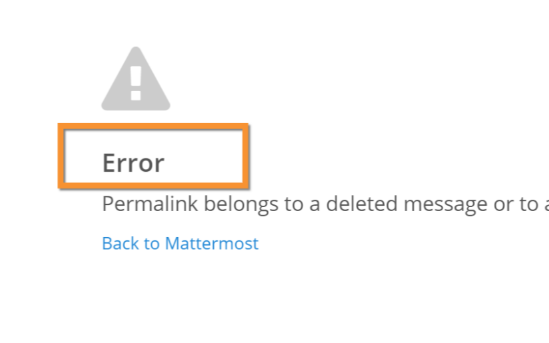
Input: Input Patterns¶
All inputs such as textareas should behave consistently. If the default behaviour is to perform an action on “Enter”, then all inputs of that type should be consistent and perform an action on “Enter”.
- Example 1:
If pressing “Enter” posts a message in the center channel post input.
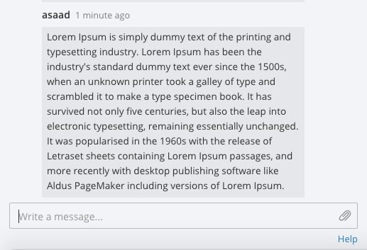- Example 2:
Then pressing “Enter” in the comment thread textarea should also post a comment.
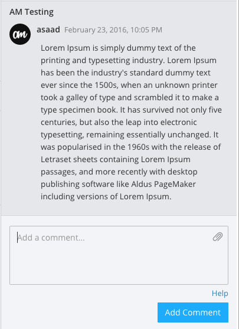- Example 3:
And other textareas or inputs should also perform their primary action when “Enter” is pressed, here’s an example of the “Edit Header” modal.
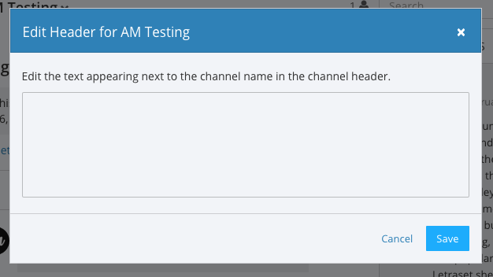
{kind=link}
Testing Checklist¶
In addition to above guidelines, the below provides a concrete checklist of mistakes to watch for when reviewing proposed product changes.
User Experience Checklist¶
1) Is the WHITESPACE next to icons SUFFICIENTLY SPACED?
Example of not enough space next to FLAG icon on RIGHT:
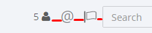
2) Is the WHITESPACE next to icons EVENLY SPACED?
Example of uneven icon spacing:

3) Are there visual GAPS?
Example of gaps in a visual design:
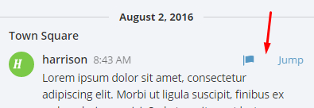
4) Read all help text OUT LOUD–is it helpful to a new user?
Example of help text that doesn’t communicate enough information to a user (no information included on how to use flagged posts):
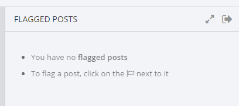
5) Does the UI work with a dark theme?
Sometimes bugs are found with theme colors, so it’s important to test on both light and dark themes.